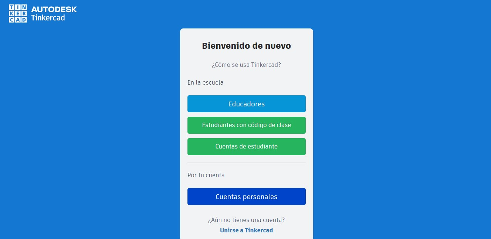
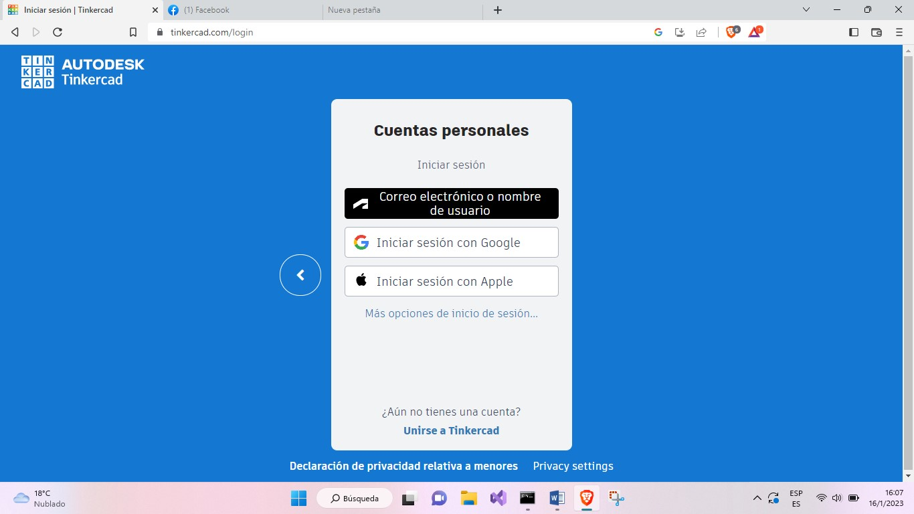
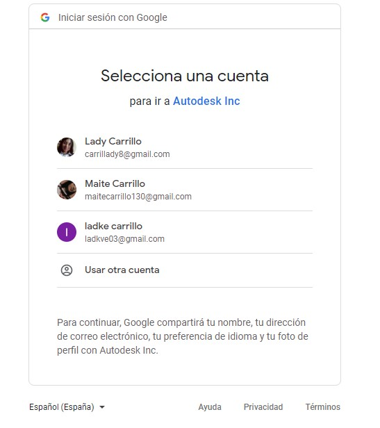
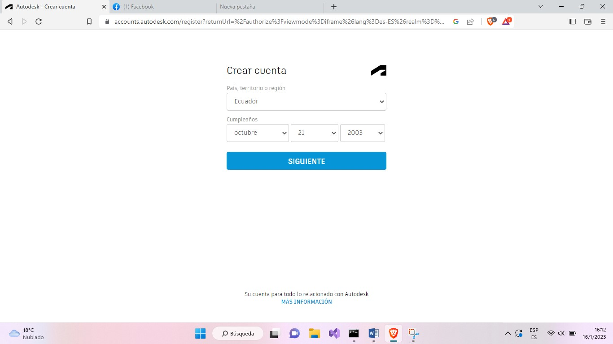
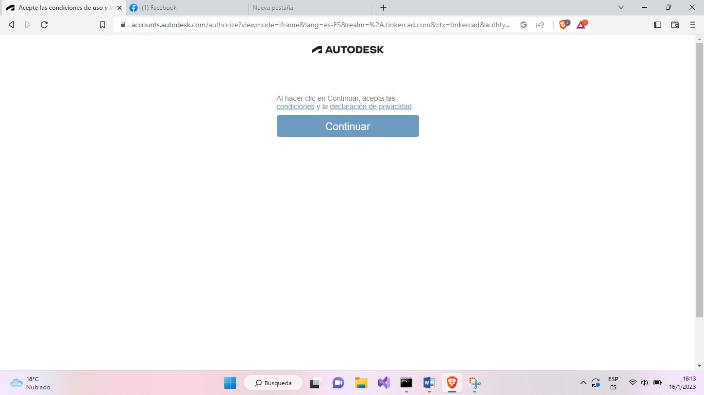
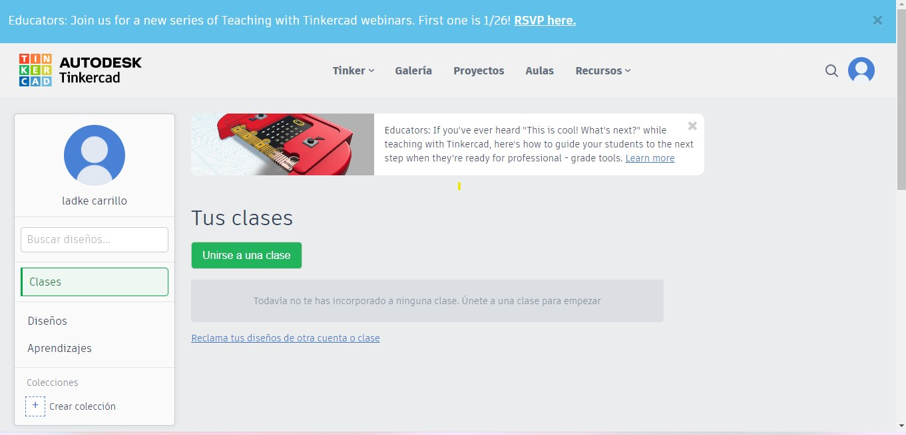

Cómo Registrarse
Una vez ya ingresada en dicho programa debemos “Registrarnos”
Paso 1
Dar clic en la opción"Registrarse"
Paso 2
Dar clic en la opción “cuentas personales”

Paso 3
Clic en cuenta de Google o alguna de las opciones de inicio de sesión que sea de tu preferencia

Paso 4
Registrarse con cualquier inicio de sesión, en este caso con Google

Paso 5
Llenar los datos correspondientes

Paso 6
Dar clic en “continuar”

Paso 7
Utilizar el programa
